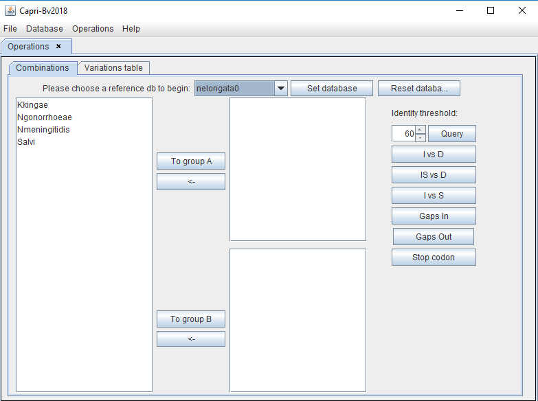
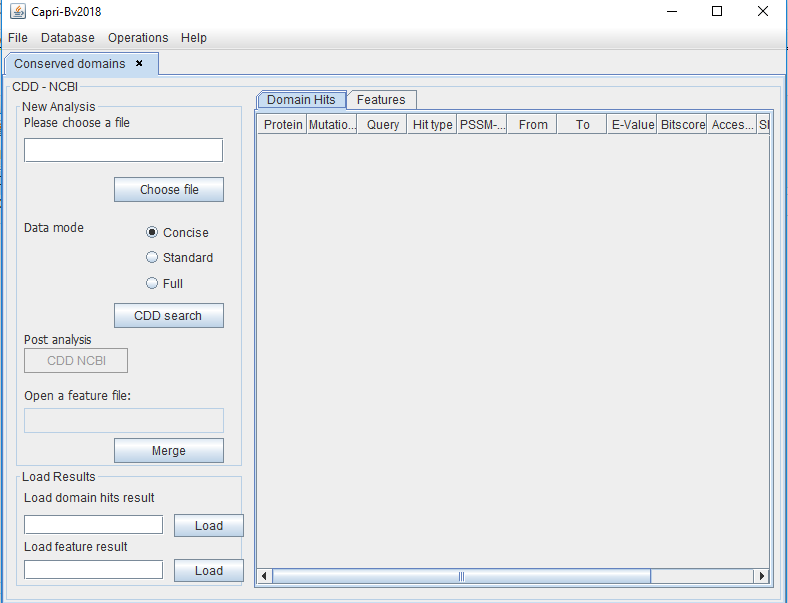

Operations menu
Subsequently to database feeding, there is two options. First, “combinations” to perform operations aiming to comparing two groups of organisms to obtain list of variations in conserved proteins. Second, that is dependant to achievement of the first one, is “CDD NCBI” in order to compare these lists to conserved domains in CDD databases in order to rank variations that could functionally affect proteins.
 |
Combinations
After clicking combination, the user can set the database created previously that will be used (here in "nelongata0") for analyses. All the organisms in the database will be displayed as shown in the picture below.
|  |
The user will have to classify the organisms into two groups based on the phylogeny (ex: bacteria that diverge before/after the coccoid transition). The reference bacterium is always in group A. Therefore other organisms need to be separated in accordance. In the example, bacteria that diverge before the coccoid transition (bacilli) will be place in group A (as is the reference). The bacteria that diverge after this node (coccus) are placed in group B.
|
|
Next, the user can filter the proteins by percentage of identity, (herein at least 60% identical in all species) and then click "query". This will set the database as 60%.
Both groups can be compared based on 6 different analyses:
- IvsD: Search for identical amino acid positions in group A but different in B
- ISvsD: Search for amino acid positions identical or similar in group A but different in group B
- IvsS: Search for identical amino acid positions in group A but similar in group B
- Gap In: Search for the position of a gap that is in group A but not in group B
- Gap Out: Search for the position of a gap that is in group B but not in group A
- Stop codon: Search for the position of a stop codon in group B
Results
The user will have to save and name the results file in the “Results” folder. The extension ".CSV" need to be added. The results can be displayed on the screen for a preview, but the user can always open the file as a spreadsheet in Excel or Calc.
 |
As example, the protein with locus tag NELON_RS0625 has a variation in the AA at position 85 This AA is identic in the group A but different in the group B. All these results can be subsequently ranked to sort those with high chance of functional impacts (see “CDD NCBI”).
CDD NCBI
By clicking this option in operation, a window will appear. In the left panel, the user can add the results file obtained before. By clicking the “CDD search” button. CAPRIB compare the results obtained with the position of conserved domains in the CDD NCBI database.
|  |
This will produce a merged file that shows only the proteins having variations into a conserved domain.
 |
By clicking the CDD NCBI button the user will be send to the NCBI site where he could download the Features file for the concerned proteins and save it into our “Results” folder.
 |
This file can be used in CAPRIB as shown bellow and by clicking the “Merge” button the program will generate a Feature merged file in the Results folder. This file contain only AA variations that are placed in a conserved CCD domain.
 |